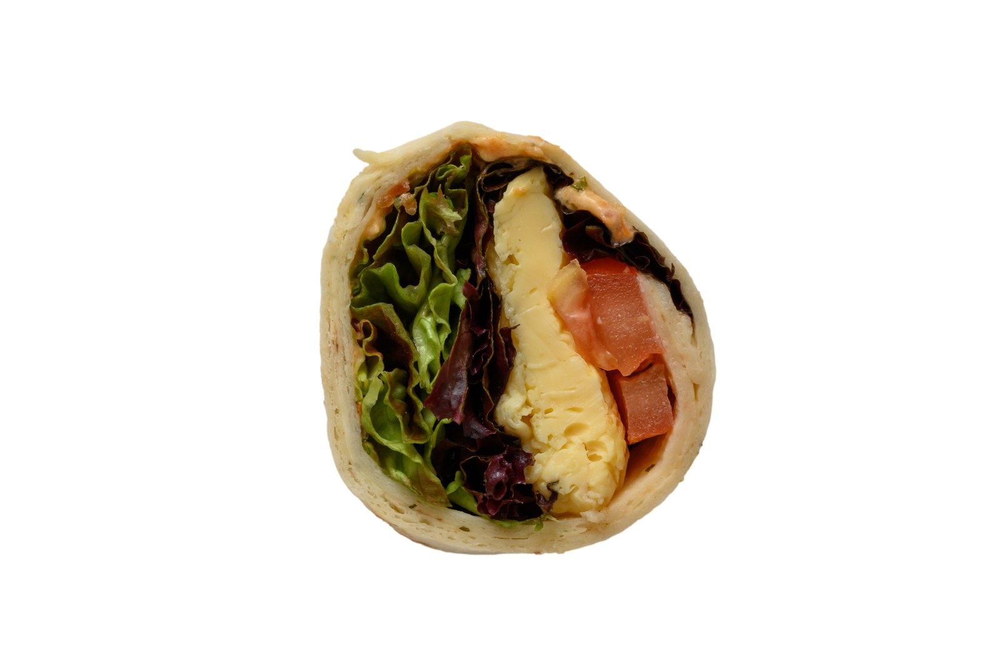

Unsere Sorten
Bäcker-Sushi im Überblick.
Ein Klick führt direkt zur Anfrage — die genauen Sortennamen ergänzen wir in Kürze.

Handgefertigt in der Backstube
Frisches Fladenbrot, herzhaft gefüllt und aufgerollt wie Sushi — dann in mundgerechte Röllchen geschnitten. Mit Salat, Gemüse und wechselndem Belag. Ideal für Buffets, Feiern und Firmenevents in Rostock.
Unsere Sorten
Ein Klick führt direkt zur Anfrage — die genauen Sortennamen ergänzen wir in Kürze.
Bäcker-Sushi bestellen